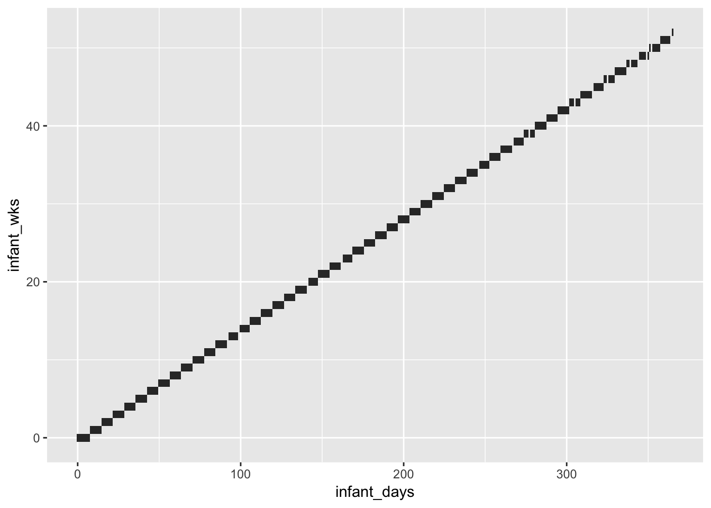

setup-exposure-data
Bryan Mayer
2019-03-19
Last updated: 2019-03-20
Checks: 6 0
Knit directory: HHVtransmission/
This reproducible R Markdown analysis was created with workflowr (version 1.2.0). The Report tab describes the reproducibility checks that were applied when the results were created. The Past versions tab lists the development history.
Great! Since the R Markdown file has been committed to the Git repository, you know the exact version of the code that produced these results.
Great job! The global environment was empty. Objects defined in the global environment can affect the analysis in your R Markdown file in unknown ways. For reproduciblity it’s best to always run the code in an empty environment.
The command set.seed(20190318) was run prior to running the code in the R Markdown file. Setting a seed ensures that any results that rely on randomness, e.g. subsampling or permutations, are reproducible.
Great job! Recording the operating system, R version, and package versions is critical for reproducibility.
Nice! There were no cached chunks for this analysis, so you can be confident that you successfully produced the results during this run.
Great! You are using Git for version control. Tracking code development and connecting the code version to the results is critical for reproducibility. The version displayed above was the version of the Git repository at the time these results were generated.
Note that you need to be careful to ensure that all relevant files for the analysis have been committed to Git prior to generating the results (you can use wflow_publish or wflow_git_commit). workflowr only checks the R Markdown file, but you know if there are other scripts or data files that it depends on. Below is the status of the Git repository when the results were generated:
Ignored files:
Ignored: .DS_Store
Ignored: .Rhistory
Ignored: .Rproj.user/
Ignored: analysis/.DS_Store
Ignored: data/.DS_Store
Ignored: docs/.DS_Store
Untracked files:
Untracked: analysis/chunks.R
Untracked: data/PHICS_transmission_data.RData
Untracked: data/exposure_data.RData
Untracked: docs/figure/
Note that any generated files, e.g. HTML, png, CSS, etc., are not included in this status report because it is ok for generated content to have uncommitted changes.
These are the previous versions of the R Markdown and HTML files. If you’ve configured a remote Git repository (see ?wflow_git_remote), click on the hyperlinks in the table below to view them.
| File | Version | Author | Date | Message |
|---|---|---|---|---|
| Rmd | 05626ad | Bryan Mayer | 2019-03-20 | wflow_publish(c(“analysis/about.Rmd”, “analysis/index.Rmd”, |
This creates the exposure data for the dose-response analysis
Subset exposure data
- no HHV-8, EBV, or HSV (no, late, and limited infections)
- Exclude family AZ in HHV-6 because no infection and all 0 viral loads
exposure_data = subset(virusMeltedDataDemoAllInfant,
times >= infantdob & ((infantInfection == 0) | (infantInfection == 1 & times <= infantInfDate)) &
idpar != "P" & !Virus %in% c("ORL_HHV8", "ORL_HSV", "ORL_EBV") &
!(FamilyID == "AZ" & Virus == "ORL_HHV6")) %>%
mutate(
virus = str_split_fixed(Virus, "_", n = 2)[,2],
virus = if_else(virus == "HHV6", "HHV-6", virus)
)
#merge later
age_data = subset(virusMeltedDataDemoAllInfant, idpar == "P") %>%
group_by(FamilyID) %>%
summarize(enrollment_age = as.numeric(difftime(min(times), unique(infantdob)))) Create time variables
- Set up the time variable (days), relative to infantdob, eventually turn into weeks
infant_dates = subset(virusMeltedDataDemoAllInfant, idpar == "P" &
!Virus %in% c("ORL_HHV8", "ORL_HSV", "ORL_EBV")) %>%
group_by(FamilyID, Virus) %>%
summarize(final_infant_date = if(infantInfection[1]) infantInfDate[1] else max(times),
first_infant_date = infantdob[1])
exposure_times = left_join(exposure_data, infant_dates, by = c("FamilyID", "Virus")) %>%
filter(times >= first_infant_date & times <= final_infant_date)
exposure_times$infant_days =
with(exposure_times, as.numeric(difftime(times, first_infant_date, units = "days")))
exposure_times$days_from_final_infant =
with(exposure_times, as.numeric(difftime(final_infant_date, times, units = "days")))
exposure_times %>% group_by(FamilyID, idpar, virus) %>%
arrange(infant_days) %>%
mutate(time_diff = c(NA, diff(infant_days))) %>%
ggplot(aes(x = days_from_final_infant, y = time_diff)) +
facet_wrap(~idpar) +
geom_point() +
geom_hline(yintercept = 7, colour = "red")Warning: Removed 122 rows containing missing values (geom_point).
Create exposure variable by household member
# combines siblings into one exposure
primary_exposures_idpar = exposure_times %>%
group_by(FamilyID, idpar, virus, infant_days, momhiv, days_from_final_infant) %>%
summarize(
total_contributed_idpar = n(),
who_contributed_idpar = paste(str_split_fixed(PatientID, "-", n = 2)[,2], collapse = ", "),
exposure = log10(sum(10^count, na.rm = T)),
infected = infantInfection[1],
final_infant_day = as.numeric(difftime(final_infant_date[1], first_infant_date[1], units = "days"))
) %>%
group_by(FamilyID, virus, idpar) %>%
mutate(
unique_id = paste(FamilyID, virus, idpar, sep = "-"),
min_time_from_end = min(days_from_final_infant),
exposure = if_else(exposure <= 1, 0, exposure)
)
with(primary_exposures_idpar, ftable(idpar, total_contributed_idpar)) total_contributed_idpar 1 2 3
idpar
M 1606 0 0
S 1057 110 158Combine exposure data and create outcome
Here, we leave counts (exposures) at times relative to infant birth, and create the outcome variable describing infant infection status in the following week.
The outcome is variable is defined so that the infectious exposure occured 4-14 days prior to infected detection.
# make a new dataset organized by time before swab, use new days, this is for household
# create outcome variable
all_exposures_raw = primary_exposures_idpar %>%
rename(count = exposure) %>%
filter(days_from_final_infant > 0) %>% # these are either censored cases or infections (negative = post-infection)
group_by(FamilyID, idpar, virus) %>%
mutate(
final_exposure = days_from_final_infant == min(days_from_final_infant),
infectious_1wk = if_else(days_from_final_infant <= 14 & final_exposure & infected == 1, 1, 0)
)
testthat::expect_equal(min(subset(all_exposures_raw, infected == 0)$days_from_final_infant),
expected = 7,
info = "check if all uninfected measurements are at least a week from final measurement (ie, no infection one week later)")
testthat::expect_equal(min(subset(all_exposures_raw, infected == 1)$days_from_final_infant),
expected = 4,
info = "check if all infected measurements > 4")Combine exposures into weekly variable
Create weekly categories
wk_cuts = 0:ceiling(max(primary_exposures_idpar$infant_days)/7) * 7
wk_labels = head(wk_cuts, -1)/7
all_exposures_raw$infant_wks = cut(all_exposures_raw$infant_days, include.lowest = T, ordered_result = T,
breaks = wk_cuts, labels = wk_labels)
all_exposures_raw$final_infant_wk = as.numeric(as.character(cut(all_exposures_raw$final_infant_day,
include.lowest = T, ordered_result = T,
breaks = 0:100 * 7, labels = F))) - 1
testthat::expect_equal(min(all_exposures_raw$final_infant_wk) ,
expected = 0,
info = "check infant_wk rescale")
all_exposures_raw$infant_wks = as.numeric(as.character(all_exposures_raw$infant_wks))
ggplot(arrange(all_exposures_raw, infant_days), aes(y = infant_wks, x = infant_days)) +
geom_tile()
Fill in missing weeks
- All interpolation is done using the interpolation of the log viral load (
zoo:na.approx). map_dfwas used so that the data is summarized by a refactored infant_wk socompletecan be used to find missing weeks for a giving exposure set (which varies by infant and exposure source).
all_exposures = map_df(unique(all_exposures_raw$unique_id), function(uid){
temp_data = subset(ungroup(all_exposures_raw), unique_id == uid)
# refactor levels for complete()
temp_data$infant_wks = factor(temp_data$infant_wks,
levels = min(temp_data$infant_wks):max(temp_data$infant_wks))
out = temp_data %>%
group_by(FamilyID, unique_id, momhiv, virus, idpar, infant_wks, final_infant_wk) %>%
summarize(
count = max(count),
infected = unique(infected),
infectious_1wk = max(infectious_1wk),
final_exposure = max(final_exposure)
) %>%
ungroup() %>%
complete(infant_wks, nesting(FamilyID, momhiv, virus, idpar, final_infant_wk,
infected, unique_id)) %>%
arrange(infant_wks) %>%
mutate(
interpolate_src = if_else(is.na(count), unique(temp_data$idpar), ""),
infant_wks = as.numeric(as.character(infant_wks)),
infectious_1wk = na.locf(infectious_1wk), # should only be zero, tested after
final_exposure = na.locf(final_exposure), # same as above
count = na.approx(count)
)
if(nrow(temp_data) == 1) return(out)
testthat::expect_equal(n_distinct(diff(out$infant_wks)), expected = 1,
info=paste("Check infant_wks interpolation worked (common interval)", unique(out$unique_id)))
testthat::expect_equal(unique(diff(out$infant_wks)), expected = 1,
info=paste("Check infant_wks interpolation worked (interval = one)", unique(out$unique_id)))
out
})
testthat::expect_equal(all_exposures %>% group_by(unique_id) %>%
summarize(test = sum(infectious_1wk), test2 = sum(final_exposure)) %>%
filter(test > 1 | test2 > 1) %>% nrow(), expected = 0,
info = "Verifying infectious_1wk and final_exposure after interpolation")
ggplot(arrange(all_exposures, unique_id), aes(y = infant_wks, x = unique_id)) +
geom_tile() +
coord_flip()
all_exposures_wide = all_exposures %>%
group_by(FamilyID, virus, infant_wks) %>%
mutate(
interpolate_src = str_trim(str_c(sort(unique(interpolate_src)), collapse = " "))
) %>%
ungroup() %>%
reshape2::dcast(FamilyID + virus + infant_wks + infectious_1wk + final_infant_wk +
infected + momhiv + final_exposure + interpolate_src ~ idpar,
data = ., value.var = "count") %>%
mutate(
HH = log10(10^M + 10^S),
HH = if_else(HH <= 1, 0, HH)
) %>%
ungroup()
exposure_data = all_exposures_wide %>%
filter(!is.na(S) & !is.na(M)) %>%
group_by(FamilyID, virus) %>%
mutate(
obs_infected = infected * max(infectious_1wk),
final_wk = max(infant_wks),
outcome_time = ifelse(obs_infected, final_infant_wk, final_wk + 1)
) %>%
ungroup() %>%
left_join(age_data, by = "FamilyID")
exposure_data_long = exposure_data %>%
gather(idpar, count, S, M, HH)
testthat::expect_equal(exposure_data %>% group_by(FamilyID, virus) %>%
summarize(test = sum(infectious_1wk), test2 = sum(final_exposure)) %>%
filter(test > 1 | test2 > 1) %>% nrow(), expected = 0,
info = "Verifying final exposure has at most one infectious dose per infant")
testthat::expect_equal(exposure_data_long %>% group_by(FamilyID, idpar, virus) %>%
summarize(test = sum(infectious_1wk), test2 = sum(final_exposure)) %>%
filter(test > 1 | test2 > 1) %>% nrow(), expected = 0,
info = "Verifying final exposure has at most one infectious dose per infant")
# save the data
if(save_data) save(exposure_data, exposure_data_long, file = "data/exposure_data.RData")
sessionInfo()R version 3.5.1 (2018-07-02)
Platform: x86_64-apple-darwin15.6.0 (64-bit)
Running under: macOS 10.14.3
Matrix products: default
BLAS: /Library/Frameworks/R.framework/Versions/3.5/Resources/lib/libRblas.0.dylib
LAPACK: /Library/Frameworks/R.framework/Versions/3.5/Resources/lib/libRlapack.dylib
locale:
[1] en_US.UTF-8/en_US.UTF-8/en_US.UTF-8/C/en_US.UTF-8/en_US.UTF-8
attached base packages:
[1] stats graphics grDevices utils datasets methods base
other attached packages:
[1] bindrcpp_0.2.2 forcats_0.3.0 stringr_1.4.0 dplyr_0.7.8
[5] purrr_0.3.0 readr_1.3.1 tidyr_0.8.2 tibble_2.0.1
[9] ggplot2_3.1.0 tidyverse_1.2.1 zoo_1.8-4
loaded via a namespace (and not attached):
[1] tidyselect_0.2.5 xfun_0.4 reshape2_1.4.3 haven_2.0.0
[5] lattice_0.20-38 testthat_2.0.1 colorspace_1.4-0 generics_0.0.2
[9] htmltools_0.3.6 yaml_2.2.0 rlang_0.3.1 pillar_1.3.1
[13] withr_2.1.2 glue_1.3.0 modelr_0.1.2 readxl_1.2.0
[17] bindr_0.1.1 plyr_1.8.4 munsell_0.5.0 gtable_0.2.0
[21] workflowr_1.2.0 cellranger_1.1.0 rvest_0.3.2 evaluate_0.12
[25] labeling_0.3 knitr_1.21 broom_0.5.1 Rcpp_1.0.0
[29] backports_1.1.3 scales_1.0.0 jsonlite_1.6 fs_1.2.6
[33] hms_0.4.2 digest_0.6.18 stringi_1.2.4 grid_3.5.1
[37] rprojroot_1.3-2 cli_1.0.1 tools_3.5.1 magrittr_1.5
[41] lazyeval_0.2.1 crayon_1.3.4 whisker_0.3-2 pkgconfig_2.0.2
[45] xml2_1.2.0 lubridate_1.7.4 assertthat_0.2.0 rmarkdown_1.8
[49] httr_1.4.0 rstudioapi_0.9.0 R6_2.3.0 nlme_3.1-137
[53] git2r_0.24.0 compiler_3.5.1